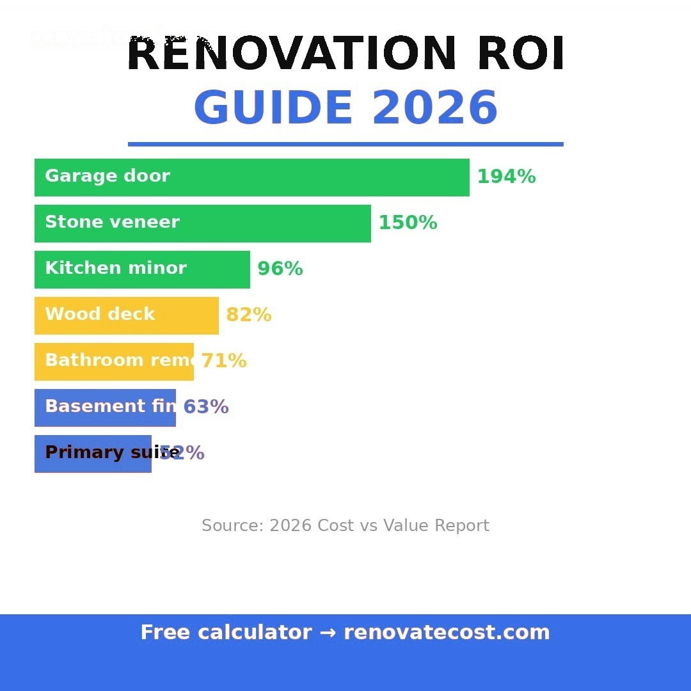

Not all home renovations are equal investments. A $30,000 kitchen remodel may return $21,000 at resale while a $15,000 bedroom addition returns only $7,500. Understanding renovation ROI before you spend helps you prioritize projects that add real value — whether you plan to sell soon or simply want the best use of your budget.

Key insight: ROI varies significantly by market. In high-demand urban markets like San Francisco or New York, renovation ROI is typically 15–25% higher than the national average. In slower markets, ROI may be lower but renovations that bring a home to market standard are still essential for a successful sale.
The following ROI figures are based on national average data from Remodeling Magazine's Cost vs. Value report, HomeAdvisor contractor surveys, and Zillow resale data. ROI represents the percentage of renovation cost recovered at resale.
| Renovation | Avg cost | Avg ROI | Value added |
|---|---|---|---|
| Kitchen remodel (mid-range) | $25,000 | 70–80% | $17,500–$20,000 |
| Basement finish | $30,000 | 65–75% | $19,500–$22,500 |
| Bathroom remodel (mid-range) | $12,000 | 60–70% | $7,200–$8,400 |
| Roof replacement | $11,000 | 55–65% | $6,000–$7,150 |
| Fresh paint + refinished floors | $8,000 | 50–65% | $4,000–$5,200 |
| Deck addition | $15,000 | 50–60% | $7,500–$9,000 |
| Bedroom addition | $50,000 | 45–55% | $22,500–$27,500 |
| Garage conversion | $20,000 | 40–50% | $8,000–$10,000 |
| Sunroom addition | $35,000 | 35–45% | $12,250–$15,750 |
The kitchen consistently delivers the highest ROI of any major renovation. Buyers place enormous weight on kitchen quality — it is often the first room toured and the last discussed before an offer. A mid-range kitchen remodel ($20,000–$35,000) typically returns 70–80% at resale.
Important nuance: the best ROI comes from bringing an outdated kitchen to market standard, not from upgrading an already-decent kitchen to luxury level. A $60,000 kitchen in a $300,000 neighborhood will return far less than the same spend in a $600,000 neighborhood.
Bathroom renovations are the second-strongest ROI category. A single outdated bathroom can drag down an entire home's perceived value. The key is prioritization — master bath renovations typically return more than guest bath updates in higher-priced markets.
A full master bath renovation ($15,000–$35,000) returns 60–70% on average. A cosmetic guest bath refresh ($4,000–$8,000) often returns 65–75% because the lower investment base makes the percentage return more favorable.
Finishing a basement is one of the highest-ROI projects available because you are converting existing square footage — which the buyer is already paying for in the structure — into livable space. The cost per added square foot of a basement finish ($20–$45) is far lower than a home addition ($100–$200 per sq ft).
In markets where square footage commands a premium, basement finishing ROI can approach or exceed 100%. The key is to finish to market standard: bedroom with egress window, bathroom rough-in at minimum, and proper egress lighting.
Roof replacement has lower ROI than kitchen or bathroom renovations, but it is often non-negotiable for a sale. Most buyers and their lenders require a roof with at least 5 years of remaining life. An aging roof can kill a sale entirely or force a price reduction far exceeding the replacement cost.
Think of roof replacement as a prerequisite, not an upgrade. The real ROI is measured in avoided sale price reductions and deals that close successfully.
Fresh paint, refinished hardwood floors, new light fixtures, and landscaping often deliver the highest ROI per dollar spent. These improvements cost relatively little but have an outsized impact on first impressions and perceived value.
Buyer surveys consistently show the same priorities. Understanding what buyers value helps you allocate renovation budget where it counts most.
| What buyers care about | Priority level |
|---|---|
| Kitchen condition and modernity | Very high |
| Bathroom condition | Very high |
| Roof age and condition | Very high |
| Flooring condition | High |
| Paint and interior freshness | High |
| HVAC age and condition | High |
| Basement livability | Medium |
| Garage condition | Medium |
| Sunroom or bonus room | Lower |
Important: ROI varies significantly by neighborhood price point. A premium renovation in a modest neighborhood rarely returns full value. Match your renovation level to your neighborhood — over-improving is a common and costly mistake.
Within each room type, the renovation scope dramatically affects ROI. As a general rule, cosmetic and mid-range renovations return a higher percentage than luxury upgrades in the same room.
Know exactly what your project should cost before committing — free, no signup required.
Calculate My Renovation Cost →It depends on the condition of your home and your local market. In hot markets, selling as-is with a price reduction often nets more than renovating first because buyers overbid regardless. In normal markets, strategic renovations — kitchen, bathrooms, fresh paint — consistently produce better net sale prices. Get a pre-listing inspection to identify what matters most.
Yes. ROI is consistently higher in markets where comparable homes are renovated (buyers expect updated kitchens and baths) and lower in markets where buyers expect to customize. Urban coastal markets typically show the highest renovation ROI. Rural or slow-growth markets show lower ROI because buyer demand is more price-sensitive than feature-sensitive.
A minor kitchen remodel — new countertops, updated cabinet fronts, new hardware, and fresh paint — consistently returns the highest percentage of any renovation category. In most US markets, a $12,000–$18,000 minor kitchen refresh returns 75–85% at resale and improves daily quality of life immediately.